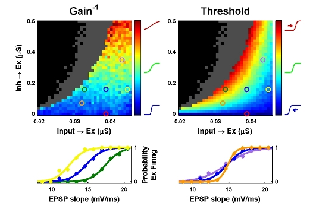

This is the readme for the model code for the paper: Carvalho TP, Buonomano DV (2009) Differential effects of excitatory and inhibitory plasticity on synaptically driven neuronal input-output functions. Neuron 61:774-85 These files were contributed by Dean Buonomano. Usage: - Extract the archive. These programs were originally in C:\CarvalhoBuonomano\Neuron\ - Use Neuron 6.1 - You may need to recompile the mod files by running mknrndll. - Double click X_SynSpace - Press Multi() on the panel on the right. The simulation starts. You may want to disable the graphics in synspace.oc and restart, it may take up to 10-18 hours. - Copy the generated "SynSpace_Out.dat" and "SynSpace_Param.dat" to the Matlab directory. GENERATE THE PARAMETER SCAN OF FIG. 1D - Open Matlab R2007a and run "analize_synaptic_space". - Leave the previously generated variables in the Matlab workspace and run "PLOT_synaptic_space". You should get a plot containing some of Figure 1 D, E:  Caveat: Old fashion pointers instead of netcon are used. It is recomended to instead use netcon for future work. Note: ModelDB auto-launch starts a graphical interface to parameter exploration code so that a modeler can expore the simulation with modelview for example. 20111101 The Neuron2009/EPlasSom.mod file was updated to use the cnexp method: see http://www.neuron.yale.edu/phpBB/viewtopic.php?f=28&t=592 for more.